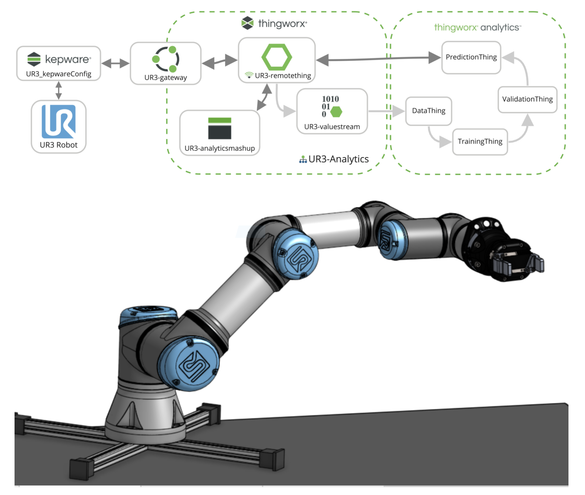

Robotics & Mechatronics
Spatial Computing
Vuforia Spatial Toolbox is an open-sourced research platform for exploring spatial computing. In addition to the tutorials on their website, the PTC Education team has developed additional add-ons and activities to help you deploy the spatial edge server in new ways or connect with educational hardware.

| Topic | Preview |
|---|---|
| This guide shows you how to install the Spatial Edge Server on a Raspberry Pi and turn it into a WiFi hotspot so you can connect and control any device on the local network, no internet connection required. Click here to learn more. | |
| Our team has created an additional add-on library with tools and hardware interfaces for expanded capability and connectivity. Click here to learn more. | |
| This guide shows you how to get started with connecting a Spike Prime to the Vuforia Spatial Toolbox and monitoring and controlling it with spatial computing. Click here to learn more. |  |
| This is a hello world guide for getting started with connecting an Arduino Uno to the Spatial Toolbox with the basic interfaces add-ons library. Click here to learn more. |  |
Onshape
One of the many benefits of Onshape is the vast amounts of communithy create models and libraries that are publicly available in the cloud. Before modeling a part yourself, it might be worth searching in "Public" to see if someone else has already made it publicly available

Libraries of Robotics Parts
The community of Onshape Education users has developed a number of part libraries for different robotics building systems, enabling students to design their robots as an Onshape Assembly.
| Topic | Preview |
|---|---|
| Click here to see the public library of parts for LEGO Education's Spike Prime Kit. |
|
| Click here to see the public library of parts for the VEX Robotics Kit. |
|
Click here to check out some of the ways we are using Onshape models as digital twins by connecting them to physical robots through Python Noteboooks. |
|


ThingWorx
ThingWorx is PTC's Internet of Things platform which can be used to develop any number of applications for connected robots. Check out some of the resources below for getting started materials or lab activities involving robots and ThingWorx.
REST API Snippets
Click here to find the ThingWorx API Snippets in Google Colab.
| Topic | Preview |
|---|---|
| ThingWorx REST API Setup | |
| ThingWorx Services with REST API |
ThingWorx Analytics
| Topic | Preview |
|---|---|
| UR3 Analytics |  |